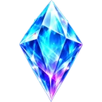
LojasMoedas, Cristais e o Coliseu
A loja de moedas tem tudo o que precisas para os 10 portões. A Loja Premium e o Coliseu são opcionais, para quem quer ir mais longe.
Tudo com as moedas que ganhas a jogar
As moedas vêm das missões, dos chefes e dos baús. A loja tem 7 secções e mais de 400 itens, e mostra apenas o que já podes usar.
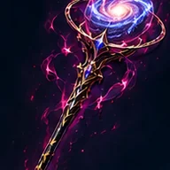
10 armas por classe, mais as versões do Artesão e do Campeão. Cada uma desbloqueia num nível.
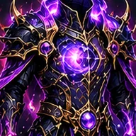
Do couro à armadura soberana, com vida, defesa e esquiva.
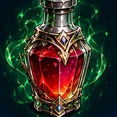
Vida, mana, fúria, escudos, venenos e bombas para usar em combate.
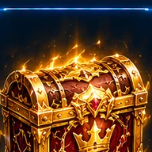
Do Comum ao Secreto. Quanto mais raro, melhores os itens.
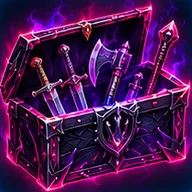
Cada um dá só um tipo de item: armas, armaduras, acessórios, joias ou alquimia.
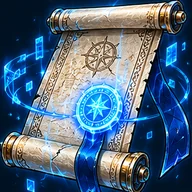
Licenças para mais missões, selos de dobro, bilhetes de vitória dupla e bússolas.
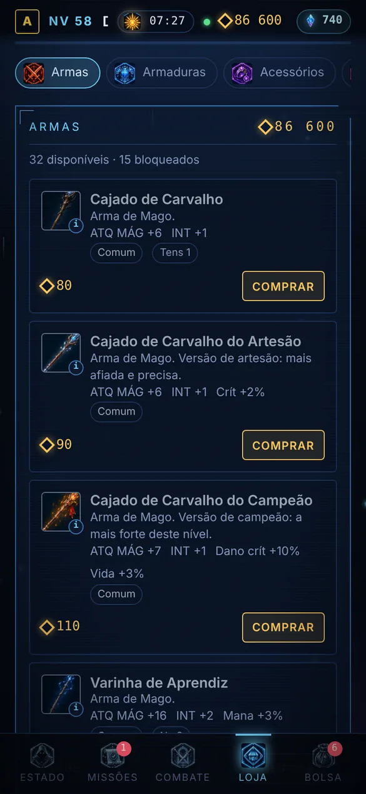
Cristais
Compram-se dentro do jogo, pelo WhatsApp, com pagamento por Multicaixa Express. Quanto maior o pacote, maior o bónus.
Quem compra Cristais aparece como Premium legalizado. Também há pacotes de moedas, a partir de 500 Kz.
O Coliseu dos Condenados
O Sistema não apagou os Jogadores que quebraram as suas regras: guardou-os, transformados naquilo que fizeram. Cada arena tem 9 Guardiões em escada e, no fim, o Campeão, que luta em três fases.
- Abres cada arena uma vez com Cristais e fica aberta para sempre
- A primeira vitória sobre um Campeão dá a sua relíquia e a sua coroa
- Os vencidos podem ser revisitados, sem recompensas

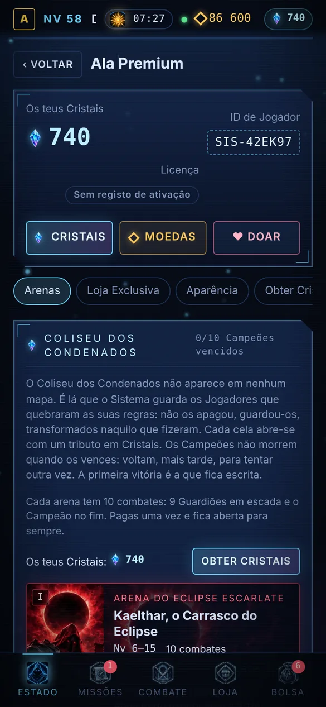
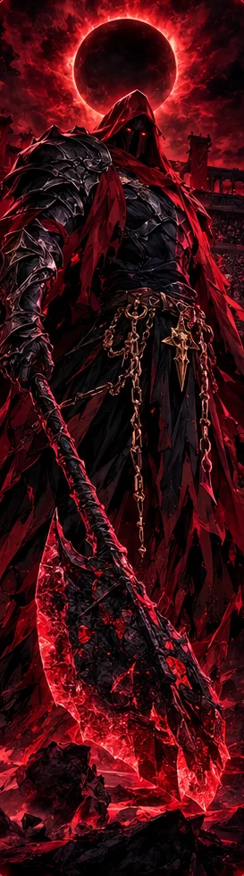

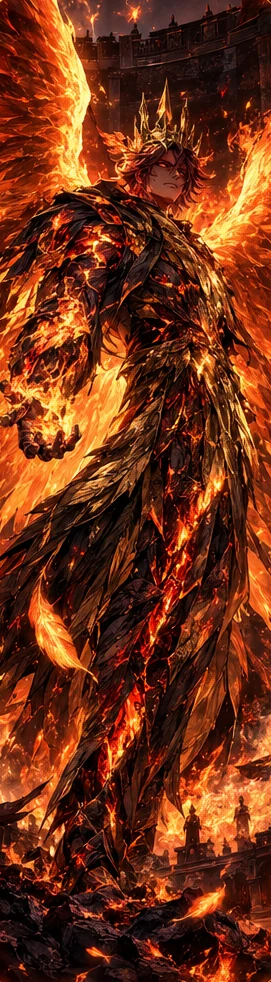
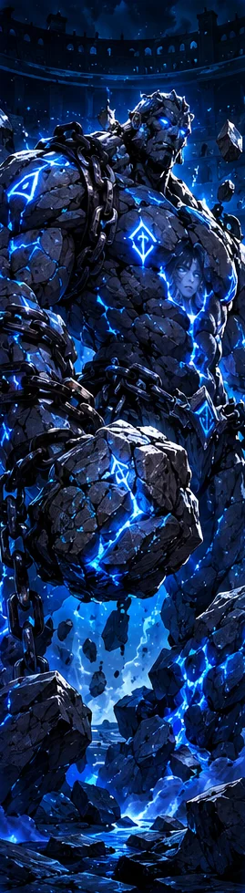

Começa com o essencial
A ativação dá-te o jogo completo. As compras dentro do jogo são opcionais.